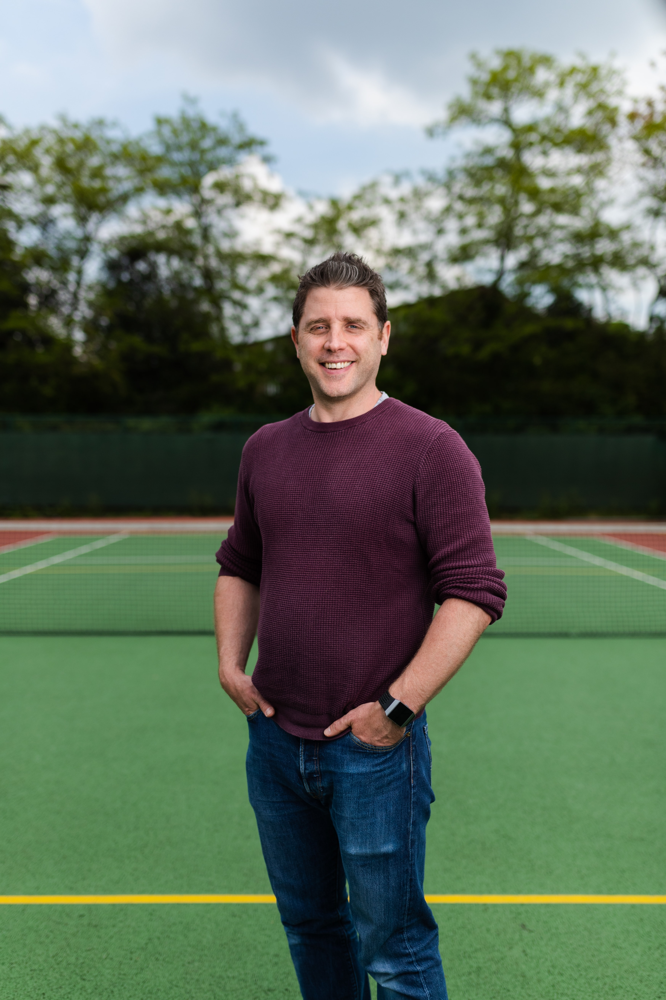

Our Mission
Our mission is to transform farming into a service sector, making agriculture more profitable with
reduced risk to the farmer, more environmentally friendly, and to produce cheaper, better and healthier
food.
AutoHarvest has the ability to improve current farming practices in a variety of ways. Tasks
requiring manual labour, such as strawberry picking, are made easier by reducing the need to find
labourers. This is especially useful in areas struggling to find agricultural labour such as the USA and
UK. In addition, Thorvald is small and lightweight compared with modern farming equipment. This means that
Thorvald has a small impact on the environment and the quality of farmland due to a reduction in soil
compaction.
Get to Know Us
The Thorvald platform emerged from the robotics group at the Norwegian University of Life Sciences. By
working closely with farmers, the main challenges for producers, both in Norway and internationally, were
identified; we saw the need to introduce robots to the agricultural domain for solving critical issues
such as labour shortages, sustainability and yield security.
With this foundation, Saga Robotics was
established as a company committed to delivering autonomous services for the agricultural industry. Saga
Robotics combined a robust mechanical design with intelligent autonomy, and the world's leading
agricultural platform, Thorvald, was born.
Our Service

Automomous
AutoHarvest is autonomous so it operates entirely on its own. Our team will install it for you and also monitor it from our control centre.

Franchise
AutoHarvest is sold as a service. You get to keep AutoHarvest at your farm throughout the season and only pay per hectare, kilo or hour used. Contact us if you are interest to franchise.

Can perform tasks such as UV-treatment, picking fruits and vegetables, phenotyping, in-field transportation, cutting grass for forage, spraying and data collection/crop prediction.

Greener the Farming
Thorvald has the ability to improve current farming practices in a variety of ways. Tasks requiring manual labour, such as strawberry picking, are made easier by reducing the need to find labourers. This is especially useful in areas struggling to find agricultural labour such as the USA and UK. In addition, Thorvald is small and lightweight compared with modern farming equipment. This means that Thorvald has a small impact on the environment and the quality of farmland due to a reduction in soil compaction.
MEET THE TEAM
AutoHarvest Robotics has dedicated employees working across three different locations: Oslo in Norway, Lincoln and Kent in the UK. At our offices, you'll find mechanical, robotics and software engineers, research teams, a communications/brand and a finance/business team as well as operations, sales and customer teams. Our team’s multidisciplinary background enables us to address complete farm systems, not just an individual section of the agricultural industry.

Henry Dan
Non-Executive Director in several FTSE 250 companies. Former CTO and COO of some of the world’s largest telecom operators.

Norman Frad
Legal Council at the Norwegian Refugee Council, former Special Council of Wikborg & Rein and Group General Council of the Telenor group.

Warren Baren
Independent advisor for startup companies in financing and commercialization. Former CEO of Cxsense, and 20 years of experience from corporate finance.